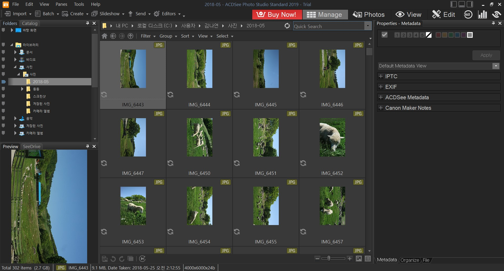
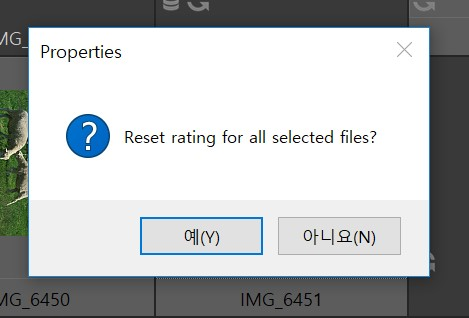
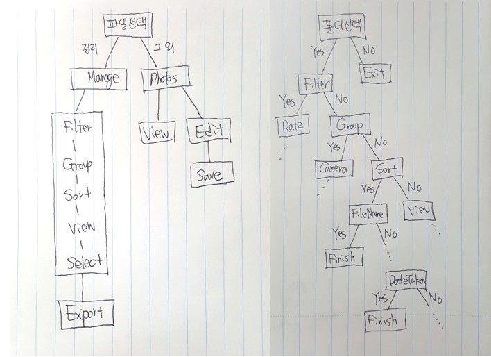
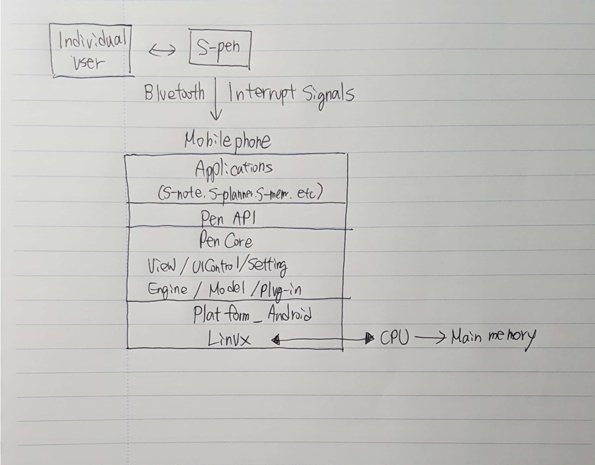

1. Interface review of picture organizing software ‘ACDSee 20’
제공해주신 목록 중에서 1위를 차지한 ACDSee 20의 인터페이스를 분석해보았습니다.

프로그램을 실행 시켰을 때 가장 먼저 뜨는 것은 이 프로그램의 인터페이스에 대한 설명이었습니다. 설명을 꼼꼼히 읽으면 누구나 쉽게 이용할 수 있게끔 되어있었습니다.
위의 사진은 기본 화면입니다. 왼쪽에서 파일에 바로 접근할 수 있으며 가운데 메인 화면에는 해당 파일에 있는 사진들이 나열됩니다. 이 부분에서 사진 정리를 할 수 있습니다. 오른쪽 상단에는 Manage, Photos, View, Edit으로 기능별 화면을 나눠 둔 것을 확인할 수 있습니다. 구조가 상당히 직관적이고 일관성 있게 이루어져 있으며 보는 방식도 개인이 원하는 형태로 바꿀 수 있어 많은 사람들이 편하게 사용할 수 있을 것이라는 판단이 들었습니다.
더불어 단축키도 잘 되어 있습니다.

한번에 여러 개의 사진의 정보를 바꾸려 할 때 정말 바꾸려 하는 것인지 확인하는 등 에러를 방지하기 위한 인터페이스도 충분히 구현이 되어있습니다. 즉, 데이터가 일관성 있게 정리되어 표시되며, 다양한 사진 정리 방식을 제공함으로써 사용자가 원하는 결과를 도출, 표시 할 수 있는 등의 특징을 확인할 수 있습니다. 이를 통해 smith and mosier의 기준에도 부합하고 있다는 것을 알 수 있습니다.
하지만 인터페이스 디자인의 기본에 어긋나는 점도 몇 가지 확인할 수 있었습니다. 사진 편집 기능에서는 취소 기능이 존재했으나, 사진 정리 기능에서는 태그를 설정하는 등에 행동에 대한 취소가 불가능 하였습니다. 사진 편집에서는 저장여부를 물어야 하기 때문에 변화를 저장할 것이냐는 안내문이 떴지만, 저희가 주로 보고자 한 사진 정리 기능에서는 어플리케이션 자체를 닫을 때 안내창조차 존재하지 않았습니다. 이러한 점들은 개선이 필요해 보입니다.
2. Decision tree to represent the task model

전체적인 ACDSee 20 소프트웨어의 이용 과정(좌)과 시간 순서에 따라 사진을 정리하는 과정(우)를 decision tree로 나타내었습니다. 전체적인 소프트웨어 이용은 서로 상호 작용 하는 경우가 많아 decision tree는 소프트웨어의 이용 과정을 나타내는 가장 적합한 방법은 아닌 것으로 생각됩니다. 예를 들어 Manage의 과정에서 filter, group, sort, view, select의 경우 각각의 과정에서 다른 작업들이 필요하며 또한 도중에 edit 모드로 넘어갈 수도 있는 등 이러한 전체적인 과정을 decision tree로 담아내는 것은 비효율적이라고 생각하였습니다. 반면, 특정 기능을 실행하는 과정은 상대적으로 decision tree로 자연스럽게 나타낼 수 있었습니다.
3. Applying the GOMS methodology to ‘ACDSee 20’
사진을 시간 순으로 정렬하는 과정에 대한 계산을 하였습니다. 사진을 읽어 들이는 것과 정리하는 시간은 편의상 200sec으로 잡았습니다.
1. point to file icon : P
2. Click mouse button : BB
3. Point to folder : P
4. Select folder (click mouse button) : BB
5. Wait for read photos : W(200)
6. Point to Sort menu : P
7. Click Sort menu : BB
8. Point to ‘taken date’ : P
9. Click ‘taken date’ : BB
10. Wait for sorting : W(200)
Total time = 4P + 4BB + 2W(200) = 4*1.1 + 4*0.2 + 2*0.2 = 5.6sec
직접 실행해본 결과 5.36sec이라는 결과가 나왔습니다. GOMS methodology를 적용한 결과와 비슷한 값이 나온 것을 확인 할 수 있습니다. 다만, 실재에서 사용할 때에는 어떤 사진을 선택할 것인 것 생각하는 mental thinking 과정에 시간이 더 들어가게 될 것입니다.
4. Galaxy Note 9 and S-pen
1) System architecture including the major hardware and software components to realize s-pen.

2) Flow of how the pen input is processed
S-pen에는 touch event, hover event 등이 존재하는데 그 중에서 터치 이벤트는 펜이 스크린을 터치할 때 발생하는 이벤트입니다. Android SurfaceView를 상속하는 SpenSimpleSurfaceView class는 손가락과 펜의 입력 데이터를 뷰포트에 표현하는 역할을 합니다. 그려진 오브젝트들은 SpenPageDoc의 SpenSimpleSurfaceView에 여러 SpenNoteDoc을 만드는 여러 SpenPageDocs와 함께 저장되는 과정을 거치게 됩니다.
예시로 주신 파워포인트의 페이지를 넘기는 입력의 경우를 예로 들자면, 펜의 버튼을 누르는 동작으로 페이지를 넘기는 동작을 할 수 있는데, 이때 입력이 인식이 된다면 블루투스 신호를 통해 본체가 입력을 인식하여 파워포인트 어플리케이션에 페이지를 넘기라는 신호를 넘겨줄 것입니다.